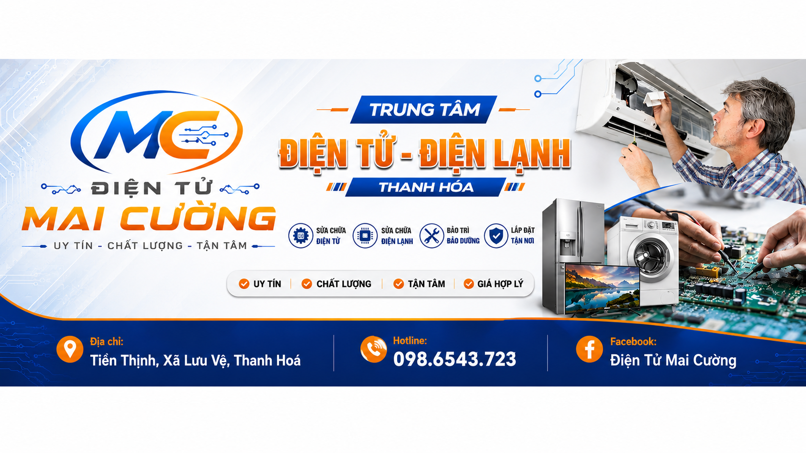
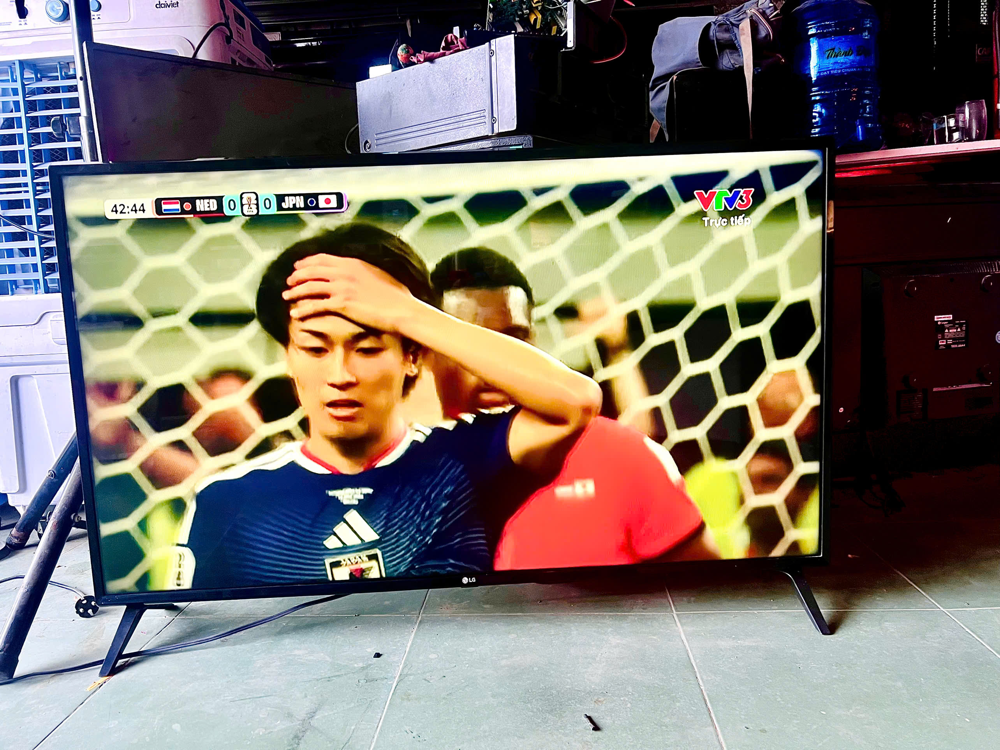
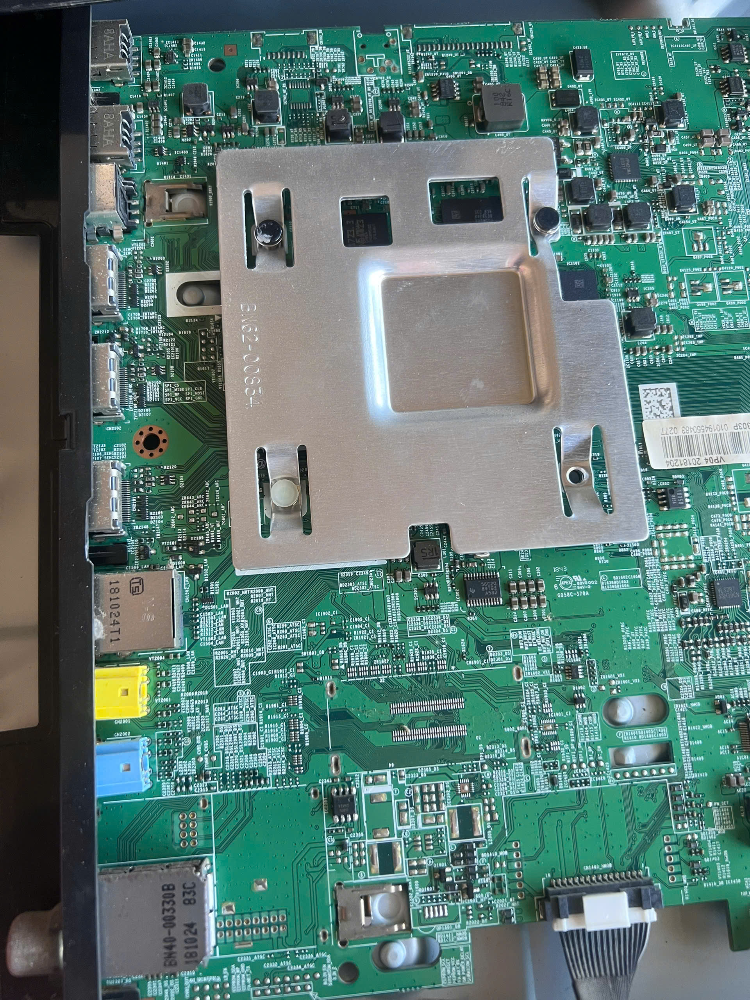
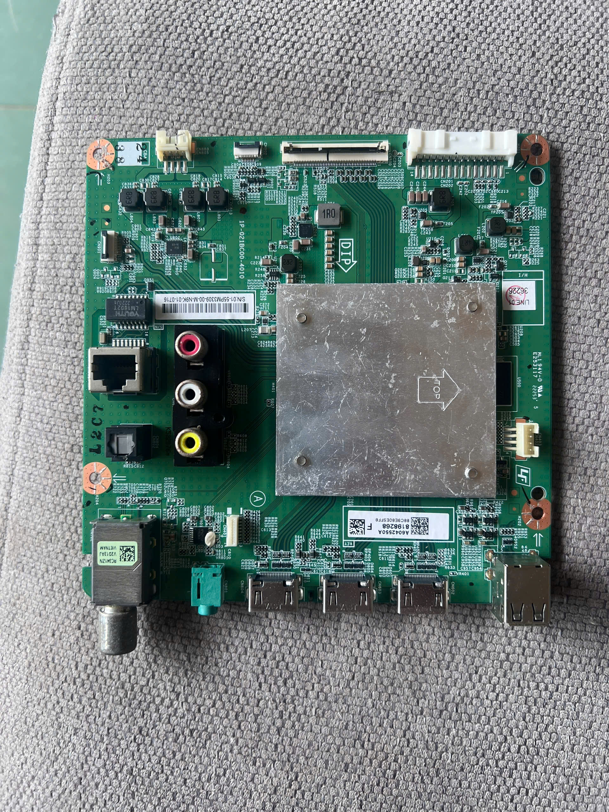
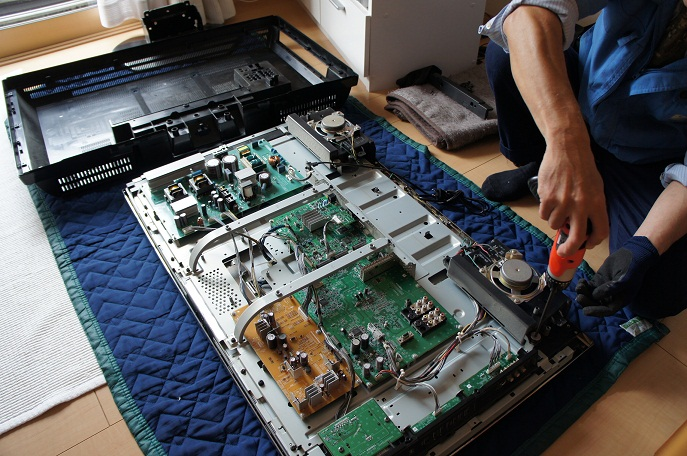
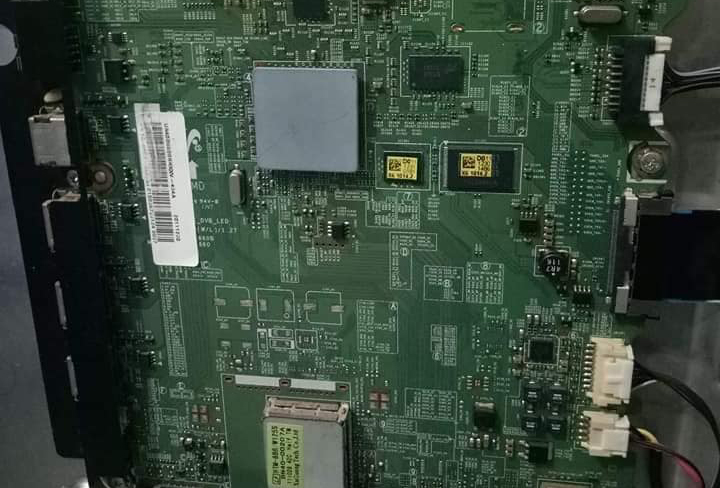

Tivi mất nguồn
Sửa bo nguồn, tụ, cầu chì, IC nguồn, tình trạng bật không lên hoặc lên rồi tắt.

Khu vực phục vụ
Điện Tử Mai Cường nhận kiểm tra và sửa tivi tận nơi tại khu vực Quảng Xương, Thanh Hóa. Thợ hỗ trợ các lỗi thường gặp như tivi mất nguồn, có tiếng không hình, sọc màn hình, hỏng đèn nền, lỗi main, lỗi nguồn và tivi chập chờn.
Dịch vụ chính
Tiếp nhận từ lỗi nguồn, hình ảnh, âm thanh đến phần mềm Smart TV. Kỹ thuật viên kiểm tra tại chỗ và giải thích tình trạng bằng ngôn ngữ dễ hiểu.
Sửa bo nguồn, tụ, cầu chì, IC nguồn, tình trạng bật không lên hoặc lên rồi tắt.
Xử lý màn hình tối, có tiếng không hình, thay LED nền đúng chủng loại.
Kiểm tra panel, cáp, board T-Con, lỗi màu, bóng ma hoặc hình ảnh bất thường.
Sửa mất tiếng, rè tiếng, không nhận cổng HDMI, AV, USB hoặc kết nối mạng.
Nạp phần mềm, sửa main, thay chip và xử lý lỗi treo logo, tự khởi động lại.
Nhận kiểm tra ampli, loa, đầu thu, màn hình và một số thiết bị điện tử dân dụng.
Hình ảnh thực tế
Hình ảnh tivi, bo mạch và linh kiện trong quá trình kiểm tra, sửa chữa tại Điện Tử Mai Cường.






Danh mục dịch vụ
Các nhóm dịch vụ được phân cấp rõ ràng để khách hàng dễ tìm đúng nhu cầu sửa chữa, lắp đặt hoặc tư vấn.

Tivi LED, LCD, Smart TV, loa, ampli, đầu thu và linh kiện điện tử dân dụng.
Tư vấn ngay
Điều hòa, tủ lạnh, máy giặt, bình nóng lạnh và kiểm tra bo mạch điện lạnh.
Tư vấn ngayNồi cơm, bếp từ, máy lọc nước, máy hút bụi, quạt và thiết bị bếp gia đình.
Tư vấn ngayKiểm tra tận nơi, sửa nguồn, main, đèn nền, màn hình sọc và lỗi Smart TV.
Gọi 098.6543.723Vì sao chọn chúng tôi
Chúng tôi kiểm tra trực tiếp, báo lỗi minh bạch và đưa ra lựa chọn sửa chữa phù hợp với giá trị thiết bị.
Bảng giá tham khảo
Giá dưới đây mang tính tham khảo, chi phí thực tế phụ thuộc vào tình trạng lỗi, kích thước tivi và linh kiện cần thay.
Hỏi đáp sửa tivi
Khi tivi có các biểu hiện dưới đây, bạn nên kiểm tra sớm để tránh hỏng nặng và phát sinh chi phí lớn.
Điện Tử Mai Cường nhận sửa tivi LCD, LED, OLED, Smart TV tại nhà. Kỹ thuật viên kiểm tra đúng lỗi, báo giá trước khi làm và bảo hành rõ ràng.
Xem bảng báo giáQuy trình
Khách gửi model tivi, tình trạng lỗi và địa chỉ cần hỗ trợ.
Kỹ thuật viên đo kiểm, xác định lỗi chính và linh kiện liên quan.
Thông báo chi phí, thời gian sửa và chính sách bảo hành.
Chạy thử tại chỗ, vệ sinh khu vực sửa và hướng dẫn sử dụng.
Liên hệ
Gửi thông tin lỗi tivi, chúng tôi sẽ gọi lại để hẹn giờ kiểm tra phù hợp.